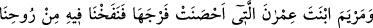
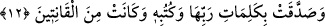

görünce içinde bulunduğu azâbı unuttu ve o güldü. Bu manzarayı görenler bu kadın
aklını yitirmiş azâb içinde olduğu halde gülüyor, dediler. Bu rivâyet gösteriyor ki
Firavun’un karısı azâb çektiği halde mâsıyete meyletmemiştir. İşte sâliha olan kadınlar
böyle olmalıdır.
Dahhâk demiştir ki: Firavun yere çakılmış kazıklara bağlı olan kadının üzerine
değirmen taşı bırakılmasını emretti. İşte bunun üzerine o: “Rabbim bana katında
Cennette bir ev yap” dedi. Değirmen taşı vücûduna yaklaştırıldığında ruhu cennete
yükseldi ve taş ruhu çıktıktan sonra cesedi üzerine bırakılmış oldu. Bu sebeple kendisi
hiç bir acı duymadı.
Bazılarına göre Firavun’un karısı cenneti özlemişti. Firavun’la birlikte bulunmaktan
usanmıştı. Onun için Rabbinden cennette kendisine bir ev yapmasını istemişti. Çoğu
tefsirde, Hak Teâlâ’nın onu cesediyle göğe yükselttiği ve hâlâ cennette olduğu bilgisi
vardır.
Hasan Basrî (k.s.) der ki: Firavun’un karısı cennete yükselmiştir. Orada yiyip
içmekte ve nîmetlerden faydalanmaktadır.
Keşşâf’ta şu ifâdeler yer almaktadır: Bu âyet-i kerîme Allah’a sığınmanın ona
başvurmanın sıkıntılardan ve çilelerden kurtuluş dilemenin sâlihlerin yolu, rasûllerle
nebîlerin sünneti olduğuna delîl teşkil etmektedir.
Mesnevî’de şöyle geçer:
Böylece Allah’ın belâsı gelip çatar ona
Yalvarıp yakarmanın hiçbir faydası olmaz o vakit
Bu huzurda hiçbir şeyin itibârı yoktur
Tevâzû kulluk ve düşkünlükten başka
Sıkıntının kaldırılması için önceden duâ edilmesi tarîkat ehlince kınanmış bir husustur.
Çünkü bu, Allah’a mukavemet ve onun verdiği meşakkatlere tahammül iddiâsı taşır.
Nitekim İbnü’l-Fârız (k.s.) bir beytinde şöyle der:
Güzeldir cesâret ve sabır göstermek düşmana karşı
Çirkindir âcizliği gizlemek dostun yanında
12. İffetini korumuş olan, İmrân kızı Meryem’i de (Allah örnek gösterdi). Biz,
ona rûhumuzdan üfledik ve Rabbinin sözlerini ve kitaplarını tasdîk etti. O,
gönülden itâat edenlerdendi.